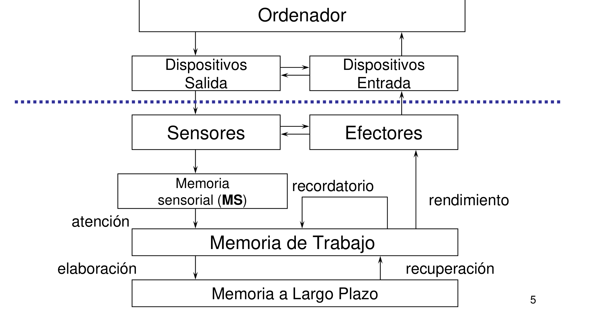
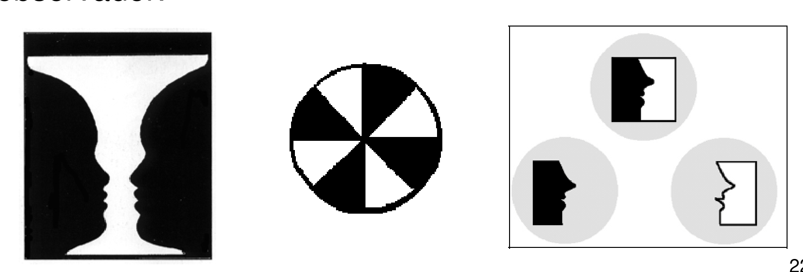
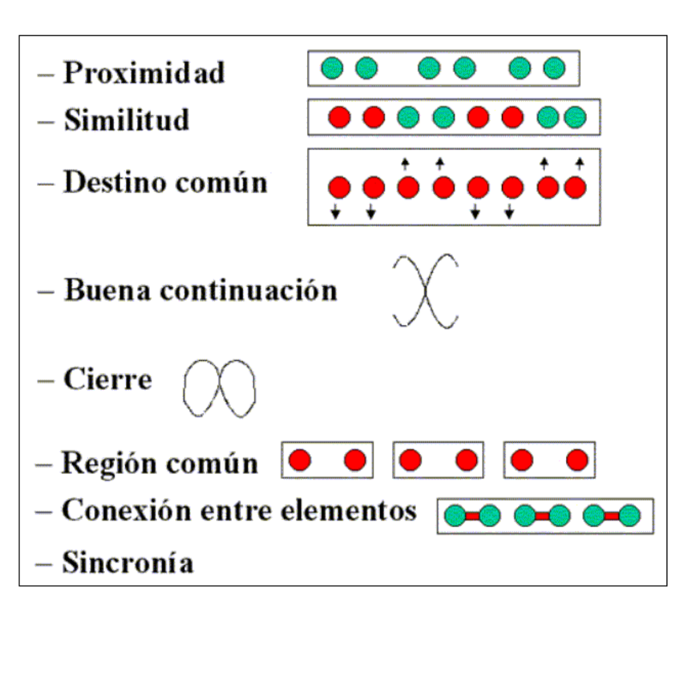
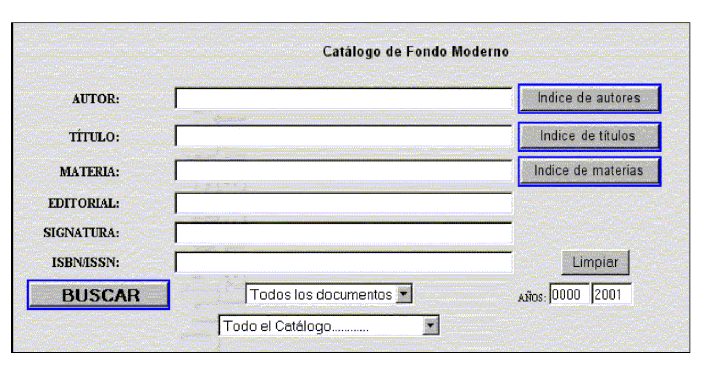
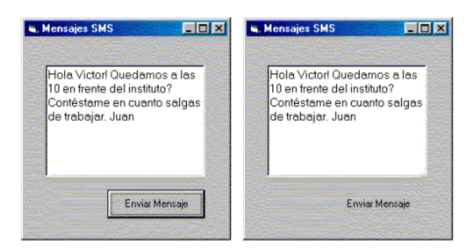

El factor humano
Temas de IPO · 2/8
2.1 El modelo de procesamiento humano
Para estudiar el papel de la persona en el diseño de sistemas interactivos se recurre a la psicología cognitiva, la disciplina que estudia el sistema de procesamiento de información humano. Los psicólogos cognitivos han acumulado datos y teorías sobre las capacidades y limitaciones de nuestro sistema cognitivo: cómo percibimos el mundo, cómo almacenamos y recuperamos la información, etc. Conocerlas permite saber qué cosas le resultan difíciles de aprender o de hacer a un usuario, y diseñar en consecuencia.
Newell y Simon publicaron en 1972 Human problem solving, una contribución decisiva a la IA. Describen el sistema cognitivo humano mediante reglas de producción del tipo SI condición ENTONCES acción, y ven la resolución de un problema como el paso de un estado inicial a un estado final (el deseado) atravesando estados intermedios de forma secuencial. Lo ejemplifican con el juego de las Torres de Hanói.
El modelo compara a la persona con un ordenador: igual que este tiene dispositivos de entrada, de salida y memoria, nosotros tenemos sentidos (entrada), efectores (salida) y varias memorias.

A la izquierda de la línea discontinua, el ordenador; a la derecha, la persona. Los sensores captan la salida del ordenador y la pasan a la memoria sensorial; con la atención, pasa a la memoria de trabajo, que intercambia información con la memoria a largo plazo (elaboración, recuperación) y ordena a los efectores actuar sobre los dispositivos de entrada del ordenador.Analogía: el ordenador humano
Los sentidos son el teclado y el ratón por los que entra la información; la memoria sensorial es un búfer diminuto que la retiene un instante; la memoria de trabajo es la RAM (rápida pero pequeña); la memoria a largo plazo es el disco duro (enorme pero más lenta), y los efectores (manos, voz) son la pantalla y la impresora con los que "sacamos" resultados.
2.2 Los sentidos
2.2.1 Canales de entrada y salida
La entrada es la percepción a través de los sentidos: vista, oído, tacto, gusto y olfato. La salida son las acciones a través de los efectores: extremidades, miembros, dedos, ojos, cabeza y sistema vocal.
El conocimiento del mundo lo construimos con la vista, el oído, el tacto, el dolor, la sensación de movimiento del cuerpo... La percepción empieza en células receptoras, cada una sensible a un tipo de estímulo, y las vías sensoriales las conectan con las estructuras centrales de procesamiento. El cerebro no registra el mundo como una fotografía, sino que construye una representación interna tras analizar sus componentes.
2.2.2 El sistema visual
Conviene distinguir dos pasos. La sensación es la captación del estímulo físico y su conversión en impulso nervioso. La percepción es la asignación de significado a ese estímulo. En el nivel sensoriomotor, lo relevante para la IPO son el color y la iluminación.
El color. La retina tiene dos tipos de fotorreceptores: los conos, para la visión diurna, y los bastones, para la nocturna; al recibir luz segregan sustancias químicas que estimulan a las neuronas. La teoría tricromática explica cómo se obtienen colores por mezcla, y la teoría de procesos oponentes explica los postefectos del color en pares opuestos: rojo-verde, azul-amarillo y acromático. La consecuencia práctica es que hay que evitar combinar colores oponentes en una pantalla (rojo sobre verde, amarillo sobre azul), porque se leen fatal; la psicología ya ofrece guías para elegir colores en las interfaces.
"¿Qué tal lo ves?": texto rojo sobre verde y verde sobre rojo, casi ilegibles.
Además, no se debe abusar del color para codificar información, porque los problemas de visión del color son frecuentes: los tiene el 8% de los hombres y el 1% de las mujeres.
| Tipo | Descripción |
|---|---|
| Tricrómata | Visión cromática normal |
| Dicromático protanopa | Insensible al rojo |
| Dicromático deuterópata | Insensible al verde |
| Tritanopa | Insensible al azul y amarillo |
| Monocrómata | Sin visión del color |
Analogía: el semáforo sin luces en columna
Si un semáforo solo cambiara de color sin cambiar de posición, una persona daltónica no sabría si está en rojo o en verde. Por eso las luces están en posiciones fijas: el color es una ayuda, no la única pista. En una interfaz, un error no debería indicarse solo con rojo, sino también con un icono o un texto.
La iluminación es la intensidad de energía luminosa que llega a la retina; influyen la duración del estímulo, el área de retina que cubre, etc. La luminosidad es cómo percibimos las características acromáticas (blancos, grises, negros). El usuario trabaja en un ambiente luminoso que afecta a cómo ve la interfaz, así que conviene alinear las pantallas correctamente respecto a las fuentes de luz, no colocarlas contra una pared o un espejo, usar vídeo inverso para minimizar destellos, usar filtros, etc.
2.2.3 Los demás sentidos
El oído. La audición es crucial para la comunicación: es el núcleo de las interacciones sociales y de la transmisión del conocimiento. En IPO interesa estudiar las interfaces auditivas y las multimodales (imagen y sonido), como los menús auditivos de las compañías telefónicas.
El tacto. Es muy importante en realidad virtual, muy útil para personas con discapacidades visuales o auditivas y da realimentación en tareas como pulsar un botón o arrastrar un objeto. No está localizado (recibimos estímulos por toda la piel) y las zonas más sensibles son los dedos.
El sentido cenestésico. Es un sentido somático: informa de lo que ocurre en la superficie y el interior del cuerpo, incluidas la posición y el movimiento de las partes del cuerpo, y nos da conciencia de dónde están el cuerpo y las extremidades.
El sentido vestibular. Informa de la orientación, el movimiento y la aceleración; sirve para el equilibrio, mantener la cabeza erguida y ajustar los ojos a los movimientos de la cabeza. Junto con el cenestésico, es clave en realidad virtual para evitar náuseas y mareos (cuando lo que ven los ojos no coincide con lo que siente el cuerpo).
El olfato. Empieza a explorarse en IPO para crear mundos virtuales más realistas y porque está conectado con el sistema que procesa las emociones (interfaces emocionales). Pero es difícil de usar: hay gran variación individual en la sensibilidad y esta se pierde con el tiempo de exposición.
2.3 La percepción
La percepción es la asignación de significado al estímulo captado. El cerebro procesa en paralelo toda la información sensorial y la interpreta según las experiencias anteriores (la memoria).
2.3.1 Percepción y organización de objetos
La distribución de los elementos de una interfaz suele decidirla el diseñador por intuición o por el espacio disponible, pero hoy se sabe bastante de cómo percibimos las escenas de forma organizada. La Gestalt afirma que "la percepción humana no es la suma de los datos sensoriales, sino que pasa por un proceso de reestructuración que configura a partir de esa información una forma, una gestalt, que se destruye cuando se intenta analizar". En otras palabras, vemos el conjunto antes que las partes.
La ley figura-fondo dice que percibimos dos componentes, una figura principal y un fondo, que evaluamos de forma distinta; el mismo objeto puede ser figura o fondo según en qué se fije el observador.

En la primera imagen se puede ver una copa blanca o dos perfiles negros enfrentados, pero no las dos cosas a la vez.Los principios de agrupación explican qué elementos tendemos a ver como un grupo:
| Principio | Tendemos a agrupar... |
|---|---|
| Proximidad | Los elementos cercanos entre sí |
| Similitud | Los elementos parecidos (mismo color, forma) |
| Destino común | Los que se mueven en la misma dirección |
| Buena continuación | Los que forman una línea o curva continua |
| Cierre | Completamos figuras incompletas para verlas cerradas |
| Región común | Los que están dentro de un mismo recuadro |
| Conexión entre elementos | Los que están unidos por una línea |
| Sincronía | Los que cambian a la vez |

En una interfaz gráfica estos principios se aplican constantemente: en el formulario del ejemplo, los tres botones de "Índice de..." se perciben como un grupo porque están juntos, son iguales y comparten recuadro azul, y cada etiqueta (AUTOR, TÍTULO...) se asocia a su campo por proximidad.

Para entenderlo mejor
Leyes de la Gestalt aplicadas al diseño UI — los principios de agrupación con ejemplos de interfaces reales (vídeo, 4 min).
2.3.2 Percepción y atención
En una interfaz el usuario recibe a menudo más información de la que puede procesar a la vez (piensa en la portada de un portal de Internet). La atención actúa como un filtro que restringe qué información se analiza en cada momento. La atrae el ambiente, con estímulos llamativos (una imagen de colores brillantes), y el propio usuario, que no recorre toda la imagen, sino que se centra en las zonas de alto contenido informativo para hacerse una idea. Un ejemplo es la "ceguera al banner": los usuarios ignoran la franja superior de las webs porque han aprendido que ahí suele haber publicidad.
2.3.3 Percepción y conocimiento
Iconos. Las imágenes dan un acceso más directo y rápido que las palabras al significado de lo que representan. Por eso los iconos deben tener una mínima diferencia con el objeto real que representan, aparecer en la misma posición en todas las pantallas, ser fácilmente distinguibles del resto y no admitir varias interpretaciones (como la casita de "inicio" del navegador).
Affordances. Son las funciones de un objeto que se perciben directamente a partir de su imagen (por ejemplo, "ser presionado"). El diseñador quiere que el usuario sepa qué hace cada objeto de la interfaz; un ejemplo negativo es poner un hipervínculo en una imagen que no parece pulsable. Para conseguir buenas affordances hacen falta forma funcional, visibilidad y acción coherente.

A la izquierda, "Enviar Mensaje" parece un botón (tiene relieve) y se entiende que se pulsa; a la derecha, el mismo texto plano no lo parece.2.4 El modelo de memoria
Las memorias forman una cadena: memoria sensorial → (atención) → memoria de trabajo ↔ memoria a largo plazo.
| Memoria sensorial | Memoria de trabajo (operativa) | Memoria a largo plazo | |
|---|---|---|---|
| Función | Búfer de los estímulos de los sentidos | Símbolos activos a los que prestamos atención y que manipulamos | Almacena todo nuestro conocimiento |
| Duración | Muy breve (milésimas de segundo a 2 s) | Rápida decaída (~200 ms si no se refresca) | Pérdidas muy lentas |
| Acceso | — | Rápido (70 ms) | Más lento (1/10 s) |
| Capacidad | Pequeña | 7 ± 2 elementos | Casi ilimitada |
2.4.1 Memoria sensorial
La información llega a los sentidos de forma continua y muy rápida, y los procesos de la memoria de trabajo necesitan tiempo, así que podría perderse antes de analizarla. Por eso cada canal sensorial tiene una memoria que la retiene muy poco tiempo para que pase a la memoria de trabajo. Hay tantas memorias sensoriales como sentidos, y se actualizan constantemente. Las mejor conocidas son la memoria icónica (visual: 9 elementos / 250 ms) y la ecoica (auditiva: 250 ms para sonidos / 2 s para palabras con significado). Gracias a ellas sabemos de dónde viene un sonido (llega a cada oído con un pequeño desfase) o vemos un fogonazo en la oscuridad después de que haya terminado.
2.4.2 Memoria de trabajo (operativa)
Es el conjunto de símbolos activos en un momento dado, a los que prestamos atención y podemos manipular voluntariamente; se mantienen mientras los usamos. Tiene acceso rápido (70 ms), decae rápido (unos 200 ms) y tiene poca capacidad: 7 ± 2 elementos, aunque varía según la persona y mejora con entrenamiento.
Como su capacidad es limitada, tendemos a buscar asociaciones; cuando una asociación se forma bien se crea una "huella", y si no, se pierde el acceso a la información (tener algo "en la punta de la lengua"). Las interferencias provocan errores. El ejemplo clásico es el cajero que da el dinero antes que la tarjeta: el usuario coge el dinero, siente que ha terminado (la huella se forma antes de tiempo, porque el objetivo era el dinero) y olvida la tarjeta. La solución de diseño es devolver primero la tarjeta.
Analogía: la encimera de la cocina
La memoria de trabajo es la encimera: cabe poco (7 ± 2 ingredientes) y lo que no usas se cae enseguida. Por eso agrupar ayuda: recordar 612345789 cuesta, pero 612 345 789 son solo 3 "bloques". En una interfaz, pedir al usuario que recuerde un código de 12 caracteres de una pantalla a otra es sobrecargar su encimera.
Los experimentos muestran además que se recuerdan mejor las primeras y las últimas palabras de una lista (efectos de primacía y recencia), que es más fácil recordar elementos con significado o relacionados y más difícil recordar elementos parecidos, y que la escasez de recursos perjudica hacer varias tareas a la vez.
2.4.3 Memoria a largo plazo
Almacena todo nuestro conocimiento, con gran capacidad, acceso más lento (1/10 s) y pérdidas lentas. La información pasa desde la memoria de trabajo mediante la memorización, que consiste en refrescarla y que puede mejorarse con técnicas. El olvido se explica por el decaimiento (la información acaba perdiéndose) y por la interferencia (la información nueva borra la antigua, como un número de teléfono nuevo). Los factores emocionales influyen: recordamos mejor lo positivo y los hechos importantes. No está claro si realmente olvidamos o si simplemente nos cuesta recuperar la información.
Tiene dos grandes tipos:
- Memoria procedimental: reglas y estrategias para hacer tareas, del tipo condición-acción, que se ejecutan de forma automática y con pocos recursos de atención (repertorios motores, estrategias cognitivas). Por ejemplo, conducir o escribir a máquina.
- Memoria declarativa, con dos subtipos:
- Episódica: recuerdos de eventos y experiencias propias, en orden ("ayer me crucé con un extraño, me pidió fuego y me atracó").
- Semántica: hechos, conceptos y habilidades que sacamos de las experiencias ("no debes fiarte de los extraños").
2.5 El modelo mental
La información de la memoria no está desordenada: se organiza en estructuras semánticas que facilitan adquirirla y recuperarla. Para la IPO, las más importantes son los modelos mentales: el modelo que una persona tiene de sí misma, de los demás, del entorno y de las cosas con las que interactúa. Es el modelo conceptual del sistema que tiene el usuario, con su estructura y su funcionamiento. Se forma con la experiencia, el entrenamiento y el aprendizaje, y no implica saber cómo funciona el sistema por dentro.
Un modelo mental es:
- Incompleto.
- Ejecutable mentalmente: el usuario puede simular su funcionamiento en la cabeza.
- Inestable: se olvidan los detalles.
- Sin límites claros: se confunde con modelos de sistemas parecidos.
- Acientífico: incluye supersticiones y creencias erróneas.
- Parsimonioso: el usuario prefiere simplificarlo.
Los errores aparecen cuando el sistema funciona distinto de como el usuario cree (de su modelo mental). Por eso es muy importante que el usuario tenga un modelo mental correcto, y el diseño de la interfaz debe ayudar a construirlo. Es una representación dinámica, que adapta lo guardado en la memoria a largo plazo a la tarea concreta que se está haciendo.
Analogía: el termostato
Mucha gente cree que subir el termostato a 30 °C calienta la casa más rápido que ponerlo a 22 °C, como si fuera un grifo. En realidad es un interruptor: la caldera calienta igual de rápido en ambos casos. Es un modelo mental incompleto y erróneo que lleva a un error (pasar calor). Un buen diseño, por ejemplo mostrando el tiempo estimado para llegar a la temperatura, corregiría ese modelo.
2.6 Ideas clave
- Psicología cognitiva para conocer capacidades y límites del usuario. Newell y Simon (1972): reglas SI-ENTONCES, estados inicial → final (Torres de Hanói). Modelo: sentidos → memoria sensorial → (atención) → memoria de trabajo ↔ memoria a largo plazo → efectores.
- Sensación (captar el estímulo) ≠ percepción (darle significado). Color: conos (día) y bastones (noche); evitar colores oponentes (rojo-verde, azul-amarillo); no codificar solo con color (8% de hombres, 1% de mujeres). Iluminación: evitar reflejos.
- Otros sentidos: oído (interfaces auditivas), tacto (RV, discapacidad, realimentación), cenestésico (posición del cuerpo), vestibular (equilibrio; mareo en RV), olfato (interfaces emocionales).
- Gestalt: el todo antes que las partes; figura-fondo; agrupación por proximidad, similitud, destino común, continuación, cierre, región común, conexión, sincronía.
- Atención como filtro (ceguera al banner); iconos claros y consistentes; affordances (forma funcional, visibilidad, acción coherente).
- Memorias: sensorial (icónica 9 elem./250 ms, ecoica 250 ms/2 s), de trabajo (70 ms, 200 ms, 7 ± 2; ejemplo del cajero), a largo plazo (casi ilimitada, 1/10 s; procedimental y declarativa episódica/semántica).
- Modelo mental: incompleto, ejecutable, inestable, sin límites claros, acientífico y parsimonioso. Los errores surgen cuando el sistema difiere del modelo; la interfaz debe ayudar a formarlo bien.